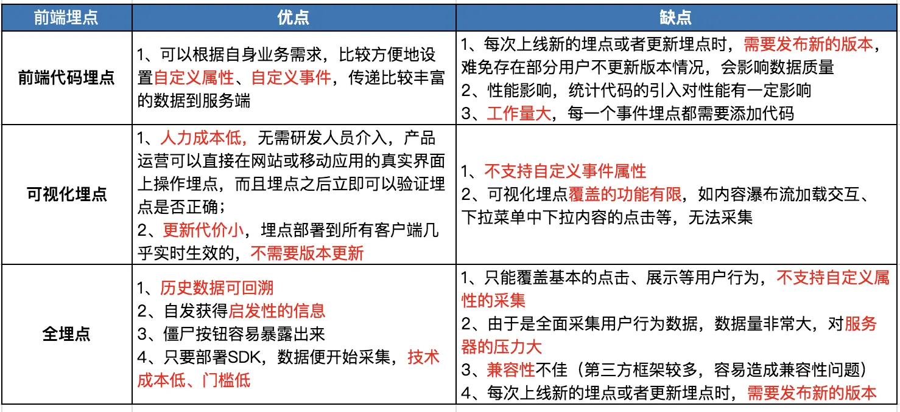

关于埋点
前言
假设你所在的公司有一个购物网站，想要分析不同用户的喜好偏向，预测商品销售情况等一些情况，这时就需要收集线上活动的用户行为的数据，并结合具体的指标进行分析。那么这些数据怎么收集？通常就可以通过埋点的方式解决类似的问题。
什么是埋点？
埋点是一种常用的数据采集方法，是收集并记录用户行为数据的过程。
通过埋点收集用户行为的有效信息，用作统计页面加载和事件行为的数据支撑，比如访问量、点击率、跳出率等，同时埋点为数据运营提供基础，为未来的业务发展提供有力支持。
埋点原则：
1、获取目标数据；
2、获取当前版本情况；
1）新功能使用情况是否符合预期；
2）新功能对其他功能、整体是否有积极影响；
3）运营活动目标群体特征获取；
4）新增商业化目标监测。
3、为后续版本做数据支持。
1）规划方向的用户行为分析；
2）画像特征分析；
常见沟通过程以埋点文档为载体，以数据埋点评审为终结。
埋点方式
埋点方式可以分为前端埋点和后端埋点，目前比较常见的前端埋点有：前端代码埋点、全埋点和可视化埋点。后端埋点通常指的就是后端代码埋点。
1、代码埋点：
实施人员：代码开发人员
优点：可以详细的设置某一个事件自定义属性，数据较为准确，比如：约定的id等属性；
缺点：时间、人力成本大，需要确定上传的数据，需要开发人员对代码进行修改；数据传输的时效性较差，因为涉及网络，甚至可能出现因为断网等原因导致数据无法上报。
2、可视化埋点：在可视化界面，点击具体点位做埋点配置；
实施人员：数据产品、数据分析师
优点：埋点只需业务同学接入，无需开发支持；
缺点：仅支持客户端行为。
可视化埋点的具体流程：
- 手机APP嵌入开启可视化功能的SDK，通过WebSocket的方式和服务器、前端进行相互通信，SDK会定时收到服务器下发的页面请求；
- 然后会上报页面快照和界面因子信息到服务器，服务器收到信息后会根据界面因子信息对页面的每个元素进行分析，根据控件的类型来标记哪些页面元素是可以被埋点的；
- 最后将可埋点信息交给前端渲染，此时，前端Web页面上展示就的就是可以埋点的页面。
- 埋点人员在渲染出来的前端Web页面上进行框选，标记事件属性等进行埋点。
- 前端Web页面会将对应的埋点信息传递给服务器保存，SDK则会通过策略定时从服务器获取埋点信息。
3、无埋点：又叫做全埋点，应用集成SDK，SDK自动监测用户所有行为。
定义：开发集成SDK后，SDK直接开始捕捉和检测用户在应用中的所有行为。
实施人员：数据产品、数据分析师
优点：
1）无需开发，业务人员埋点即可；
2）支持先上报数据，后进行埋点。
缺点：
1）数据量大；
2）多数有清空机制，超过n天，清空数据，无法追溯；
3）仅仅支持客户端。
注：无埋点不是不埋点
注意：
全埋点和可视化埋点很像。从实际的实现上看，二者的区别就是：可视化埋点先通过界面配置哪些控件的操作数据需要收集；“无埋点”则是先尽可能收集所有的控件的操作数据，然后再通过界面配置哪些数据需要在系统里面进行分析。
“无埋点”相比可视化埋点的优点：
1、解决了数据“回溯”的问题，可视化埋点方案，只能从这一时刻向后收集数据，“无埋点”则从部署 SDK 的时候数据就一直都在收集了；
2、“无埋点”方案也可以自动获取很多启发性的信息，例如，“无埋点”可以告诉使用者这个界面上每个控件分别被点击的概率是多大，哪些控件值得做更进一步的分析等等。

一些埋点工具
- 百度统计
- 神策数据
- FireBase
- TalkingData
埋点数据采集遇到的问题：
实时性：无网条件下产生的数据，无法实时上报；
完整性：部分数据无法采集，根据《用户隐私协议》和《欧盟通用数据保护条例》
异常：部分埋点，随版本升级变化，无法获取。